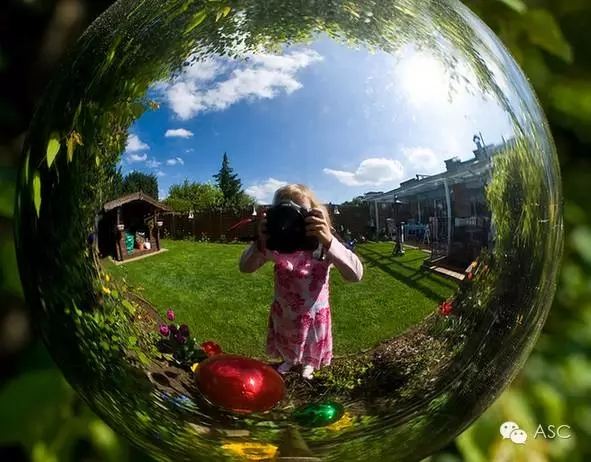
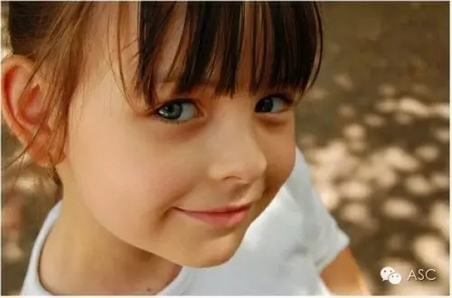

互惠动态
|
|
学霸为啥混不过学渣，因为决定孩子一生的不是学习成绩|说的真好
蔡元培先生在《中国人的修养》一书中说到：决定孩子一生的不是学习成绩，而是健全的人格修养！
而在大多数的家庭教育里，让孩子两三岁开始背唐诗，四五岁学英语，上学后要请家教、上辅导班，成绩一定要名列前茅，将来一定要上名牌大学。似乎只有这样，父母的教育才算成功，孩子才算成才。实践证明，这是对家庭教育的极大误解，是升学教育在家庭教育中产生的不良后果。家庭教育最重要的任务应该是建筑孩子的人格长城。
试想，如果一个孩子缺少对生命的认知（一遇到挫折就产生轻生的念头），没有梦想的能力（自己将来想做什么都不知道），不懂得保护自己（做了博士生依然被农民拐卖），无法与别人共享（腰缠万贯却不快乐），那么，即使这个孩子门门功课考第一，又能怎么样？
当今，最该改变的是父母，是父母的教育观念。那么，正确的家庭教育应该是什么？是父母应该帮助孩子建造一个良好的人生平台，让孩子有很好的人格修养，懂得做人，懂得成功的真正含义。
只有父母的教育观念发生了转变，我们的孩子才能接受良好的家庭教育，才能终生受益。
1
树立乐观向上的心态
1、接受现实是走向乐观的第一步
2、培养乐观的性格，让孩子坦然地面对生活中的不幸
3、让孩子保持一颗平常心
4、孩子把大量的精力耗费在焦虑上，就不能发挥其固有的能力
5、幽默感看似“小伎俩”，实则“大本事”
2
学会感恩，懂得宽容
1、心胸狭窄只会让孩子一生痛苦
2、拥有爱心，就有了求知求美的动力
3、恶作剧会“惹祸”，及时引导孩子改正
4、及时消除孩子的残忍行为
5、懂得感恩，才会成长
3
直面挫败
1、孩子是脆弱的，教他勇于正视失败
2、培养孩子的意志力不容忽视
3、对挫折感到陌生的孩子，很难融入社会
4、用自信取代自卑
5、总是责备孩子的失败，孩子将会变得“无能”
6、对孩子进行夸奖，但不要过度
4
教会孩子自我保护
1、教会孩子一些安全常识，冷静应对伤害
2、依靠父母的孩子，总免不了挨摔
3、孩子缺乏处世能力，随时都会有被生活吞噬的危险
4、过分地保护，就等于“伤害”
5、提高孩子的“免疫力”，从容面对诱惑
5
让孩子敢于梦想
1、有梦想才有创造
2、不要训斥孩子的“梦话”
3、孩子有梦想时，催促他向梦想迈进一步
4、拒绝孩子问的“为什么”，就等于剪断了他思维的翅膀
5、善待孩子的兴趣
6、善于创造的孩子，往往具有一个奔驰的头脑

6
培养孩子良好的沟通技巧
1、懂得社交礼仪的孩子，能够拥有好人缘
2、孩子善于谈吐，最能弓l起别人的兴趣和注意
3、尊重他人，就是尊重自己
4、孩子勇于承认错误，则错误已经改了一半
5、合作能力比知识更重要
6、懂得倾听的孩子具有人格魅力
7
教会孩子合理使用钱财
1、孩子越早接触和学会使用零花钱，长大后就越容易赚到钱
2、正确处理孩子的压岁钱
3、养成储蓄的习惯，让孩子终生受益
4、授之于鱼，不如授之于渔
5、纠正孩子盲目攀比的心理
8
帮助孩子正确认识自我
1、鼓励孩子主动与人交往，消除孩子的孤僻
2、长期处在害羞之中，孩子容易产生自卑感
3、学会欣赏别人，才会欣赏自己
4、让孩子每天发现一个自己的优点
5、懂得“舍”才会有所“得”


关于互惠，您了解得够多么？
请外国学生来家庭照顾孩子，辅导孩子外语？
只了解这些是不够的！
获取更多信息请参考以下方式：
联系ASC：
电话：86-21-61116069(上海中心）
86-25-66065662（南京中心）
全国家庭均可申请！
手机：15601666586（可加微信）
Q Q：3259637585
微信：asc-center
邮箱：info@asc-center.com
网站：www.asc-aupair.com

感谢您对我们的关注